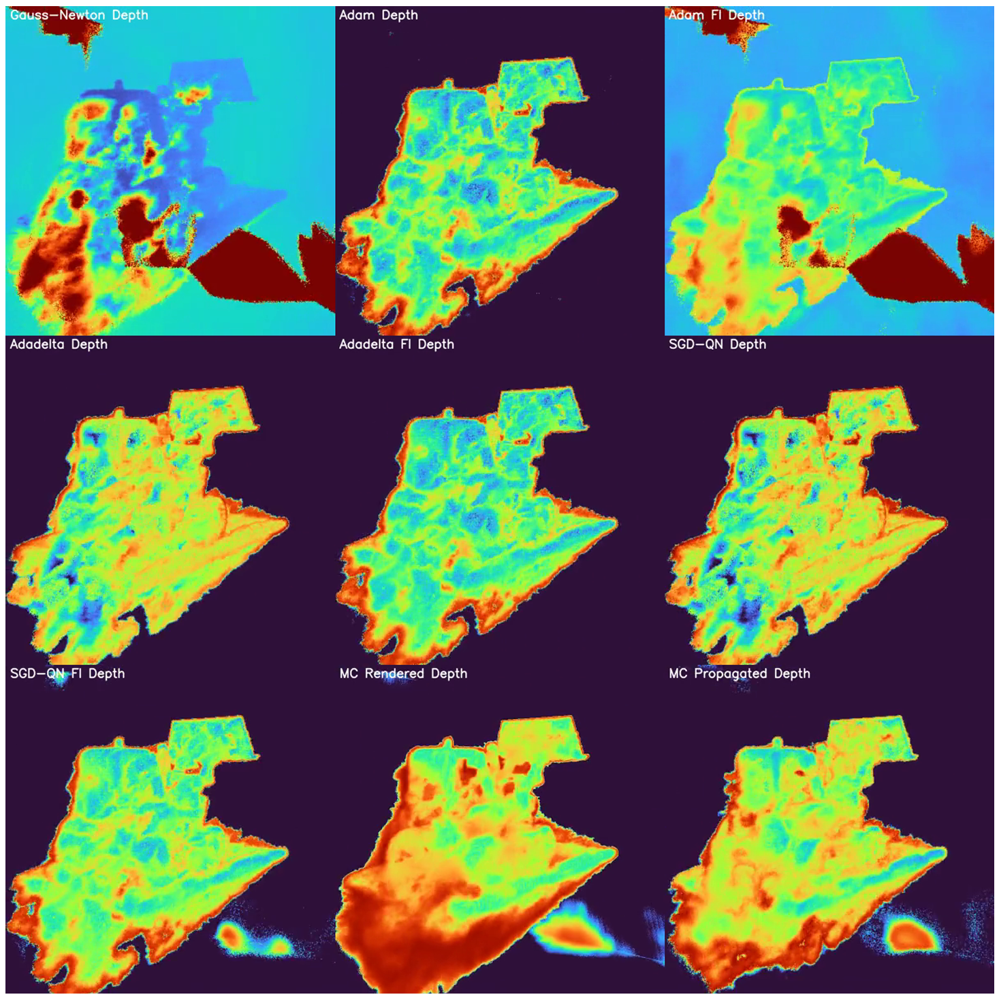
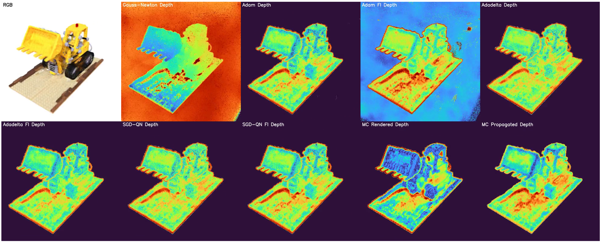
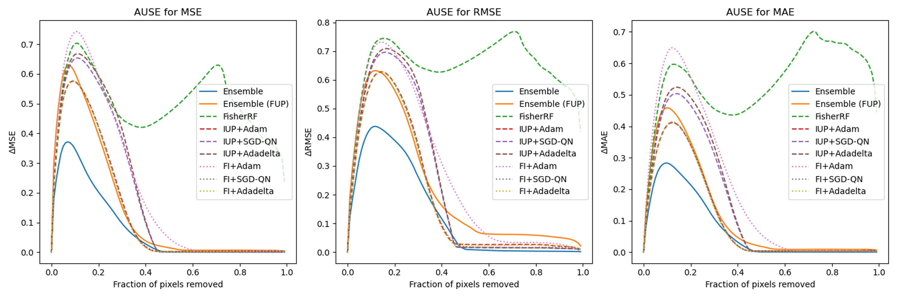
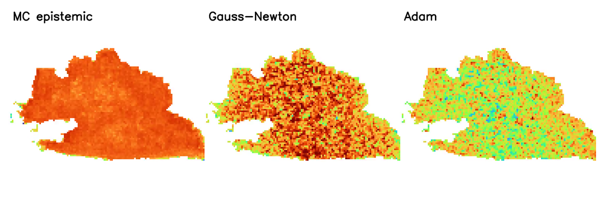
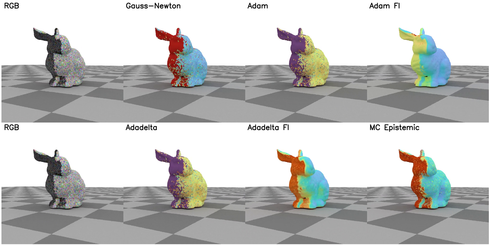

Abstract
Neural Radiance Field and related inverse rendering methods which reconstruct 3D scenes from images have gained significant attention in recent years and have been applied to many downstream tasks such as robot planning and scene understanding as an expressive 3D representation. Consequently, uncertainty quantification for these methods starts to show significance as it enables us to assess the credibility of the inference results from these 3D representations and potentially improve both the reconstruction quality and downstream task performance through active planning. Previous approaches to this problem either only quantify spatial uncertainty over some deformation field, or can only handle radiance fields with spatial parametrizations. Additionally, they obtain image-space uncertainty via volume rendering the uncertainty, the results of which depend on the reconstruction quality and might not provide the information needed.
In this project, we propose a framework to efficiently quantify both parameter-space and image-space uncertainty of any radiance field models in a principled way, which may also be applied to other inverse rendering problems. We also evaluate and compare our method to previous ones under several synthetic scenes.
In summary, our contributions are:
- Propose an efficient pipeline to directly quantify the parameter-space uncertainty of any NeRF structure without modifying the model.
- Provide a principled approach to quantify image-space uncertainty using forward Uncertainty Propagation.
- Evaluate and compare uncertainty quantification results on different approximations and methods.
Method
Uncertainty from Fisher Information
We model the input images as observations from a parametric distribution over the rendering function of some unknown ground-truth NeRF parameters \(\bar{\theta}\): \[ I \sim \mathcal{N}(R(\bar{\theta}),\; \Sigma). \] The training process of NeRF is then a maximum likelihood estimate (MLE): \[ \hat{\theta} = \arg\max_{\theta} \sum_k \log p(I_k \mid \theta), \] which is equivalent to training NeRF with mean squared error. Based on the asymptotic normality of MLE, the parameter variance is related to the Fisher information: \[ \hat{\theta} \;\xrightarrow{d}\; \mathcal{N}\!\left(\bar{\theta},\; \mathcal{I}(\theta)^{-1}\right), \] where \(\mathcal{I}(\theta) \approx H(\hat{\theta})\), the Hessian of the loss at the optimized parameters. As a result, parameter uncertainty can be derived by inverting this Hessian.
Inverse Uncertainty Propagation (IUP)
We additionally propose deriving parameter uncertainties through inverse Uncertainty Propagation. Considering an implicit function \(F\) that maps input images to a trained NeRF via optimization, \(\hat{\theta} = F(I)\), the Uncertainty Propagation framework implies: \[ \Sigma_{\hat{\theta}} \approx J_F \,\Sigma_I\, J_F^\top. \] Using implicit differentiation, the Jacobian \(J_F\) can be expressed as: \[ J_F \approx -H(\hat{\theta})^{-1}\, J_R(\hat{\theta})^\top, \] yielding the full uncertainty estimate: \[ \Sigma_{\hat{\theta}} \approx H(\hat{\theta})^{-1}\, J_R(\hat{\theta})^\top\, J_R(\hat{\theta})\, H(\hat{\theta})^{-\top}. \]
Efficient Approximations
Both methods require the Hessian of the loss function, and IUP additionally requires the rendering Jacobian. We propose two approaches to approximate the Hessian as a diagonal matrix:
Gauss-Newton Approximation: Under \(\ell_2\) loss, the Hessian is approximated as \(H(\hat{\theta}) \approx \text{diag}(2 J_R^\top J_R)\), where the Jacobian can be computed efficiently using spatial sparsity of voxel-based NeRF representations.
Optimizer States: The adaptive factors used in optimizers like Adam, Adadelta, and SGD-QN can be interpreted as rough approximates of the inverse Hessian. For example, Adam's \(\sqrt{\hat{v}_t}\) serves as an approximation of \(H(\theta_{t-1})\), giving us an essentially "free" Hessian estimate from any trained NeRF.
Forward Uncertainty Propagation (FUP)
Previous works compute image-space uncertainties by volume rendering the uncertainty, which depends on the NeRF density and is unreliable for poor reconstructions. We instead apply the Uncertainty Propagation framework in the forward direction: \[ \Sigma_{\hat{I}} \approx J_R \,\Sigma_{\hat{\theta}}\, J_R^\top, \] providing principled image-space uncertainties that are independent of reconstruction quality artifacts.
Results
We evaluate our method on the Lego scene from the synthetic NeRF dataset under two settings: full-view (20 cameras subsampled from all training cameras using iterative furthest point sampling) and front-view (15 cameras lying in the 120° cone region from the front). The front-view setting helps evaluate the case where information from some viewpoints is severely insufficient.
Depth Uncertainty Estimation
We measure how well predicted image-space depth uncertainty aligns with actual depth error using Area Under Sparsification Error (AUSE), following the protocol from Bayes' Rays.


Our results using FI with SGD-QN or Adadelta Hessian approximation give the best performance compared to other methods. FisherRF incorrectly predicts lower uncertainty for the foreground object compared to the background, leading to significantly higher error. Qualitatively, our methods produce reasonable results: unobserved regions at the back have higher uncertainty in the front-view setting, and higher uncertainty is observed at convex regions, sharp creases, partially occluded areas, and object silhouettes in the full-view setting. Our method also produces relative uncertainty that visually matches better with the ensemble results.

Quantitative Comparison
| Method | Approximation | AUSE MSE ↓ | AUSE RMSE ↓ | AUSE MAE ↓ |
|---|---|---|---|---|
| Ensemble | — | 0.0791 | 0.1311 | 0.0699 |
| Ensemble (FUP) | — | 0.1427 | 0.2165 | 0.1166 |
| Ensemble (Bayes' Rays) | — | 0.1352 | 0.2157 | 0.1047 |
| Bayes' Rays | Gauss-Newton | 0.1582 | 0.2030 | 0.1490 |
| FisherRF | Gauss-Newton | 0.4936 | 0.6416 | 0.5386 |
| IUP (Ours) | Adam | 0.1360 | 0.1873 | 0.1011 |
| Adadelta | 0.1932 | 0.2309 | 0.1507 | |
| SGD-QN | 0.1856 | 0.2253 | 0.1434 | |
| FI (Ours) | Adam | 0.2112 | 0.2640 | 0.1911 |
| Adadelta | 0.1345 | 0.1849 | 0.1002 | |
| SGD-QN | 0.1347 | 0.1824 | 0.0991 |
Quantitative comparison under the front-view setting. FisherRF shows significantly higher error as it incorrectly predicts lower uncertainty for the foreground region compared to the background. Ensemble (100 models) provides an upper bound reference.
Results on Other Tasks
As a proof of concept, we also apply our method to other inverse rendering tasks beyond NeRF.


Resources
Paper: The project report is available here.
References
- [1] A. Bordes, L. Bottou, and P. Gallinari. SGD-QN: Careful Quasi-Newton Stochastic Gradient Descent. JMLR, 2009.
- [2] S. Fridovich-Keil, A. Yu, M. Tancik, Q. Chen, B. Recht, and A. Kanazawa. Plenoxels: Radiance Fields without Neural Networks. CVPR, 2022.
- [3] L. Goli, C. Reading, S. Sellán, A. Jacobson, and A. Tagliasacchi. Bayes' Rays: Uncertainty Quantification for Neural Radiance Fields. arXiv, 2023.
- [4] W. Jiang, B. Lei, and K. Daniilidis. FisherRF: Active View Selection and Uncertainty Quantification for Radiance Fields using Fisher Information. arXiv, 2023.
- [5] A. Karnewar, T. Ritschel, O. Wang, and N. J. Mitra. ReLU Fields: The Little Non-linearity That Could. SIGGRAPH, 2022.
- [6] A. Kendall and Y. Gal. What Uncertainties Do We Need in Bayesian Deep Learning for Computer Vision? NeurIPS, 2017.
- [7] D. P. Kingma and J. Ba. Adam: A Method for Stochastic Optimization. arXiv, 2014.
- [8] R. Martin-Brualla et al. NeRF in the Wild: Neural Radiance Fields for Unconstrained Photo Collections. CVPR, 2021.
- [9] B. Mildenhall, P. P. Srinivasan, M. Tancik, J. T. Barron, R. Ramamoorthi, and R. Ng. NeRF: Representing Scenes as Neural Radiance Fields for View Synthesis. ECCV, 2020.
- [10] T. Müller, A. Evans, C. Schied, and A. Keller. Instant Neural Graphics Primitives with a Multiresolution Hash Encoding. ACM TOG, 2022.
- [11] X. Pan, Z. Lai, S. Song, and G. Huang. ActiveNeRF: Learning Where to See with Uncertainty Estimation. ECCV, 2022.
- [12] J. Shen, A. Ruiz, A. Agudo, and F. Moreno-Noguer. Stochastic Neural Radiance Fields: Quantifying Uncertainty in Implicit 3D Representations. 3DV, 2021.
- [13] J. Shen, A. Agudo, F. Moreno-Noguer, and A. Ruiz. Conditional-Flow NeRF: Accurate 3D Modelling with Reliable Uncertainty Quantification. ECCV, 2022.
- [14] N. Sünderhauf, J. Abou-Chakra, and D. Miller. Density-aware NeRF Ensembles: Quantifying Predictive Uncertainty in Neural Radiance Fields. ICRA, 2023.
- [15] M. Tancik et al. Nerfstudio: A Modular Framework for Neural Radiance Field Development. SIGGRAPH, 2023.
- [16] D. Yan, J. Liu, F. Quan, H. Chen, and M. Fu. Active Implicit Object Reconstruction Using Uncertainty-Guided Next-Best-View Optimization. arXiv, 2023.
- [17] M. D. Zeiler. Adadelta: An Adaptive Learning Rate Method. arXiv, 2012.
- [18] H. Zhan, J. Zheng, Y. Xu, I. Reid, and H. Rezatofighi. ActiveRMAP: Radiance Field for Active Mapping and Planning. arXiv, 2022.